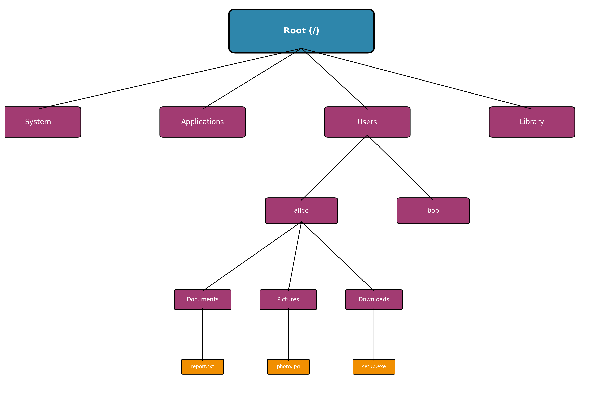
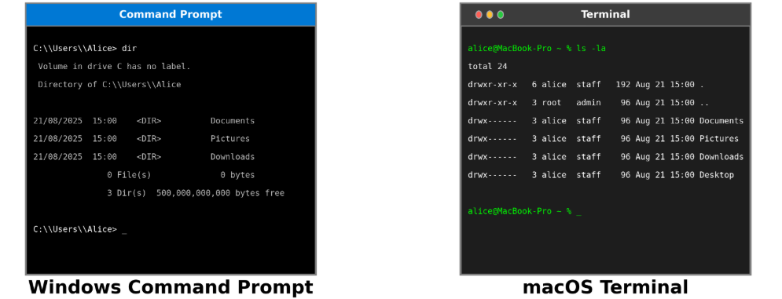
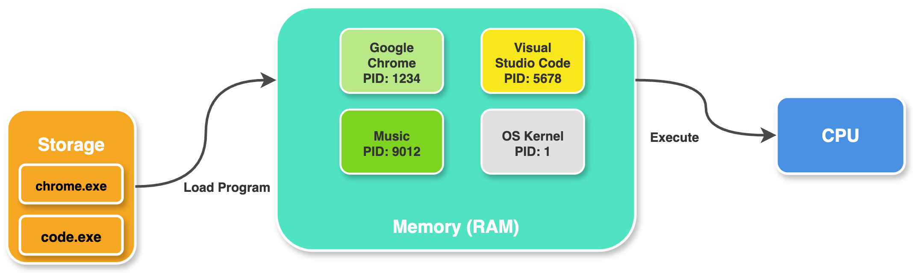
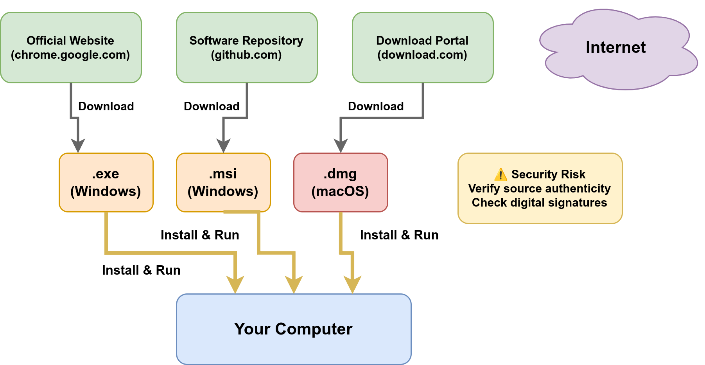
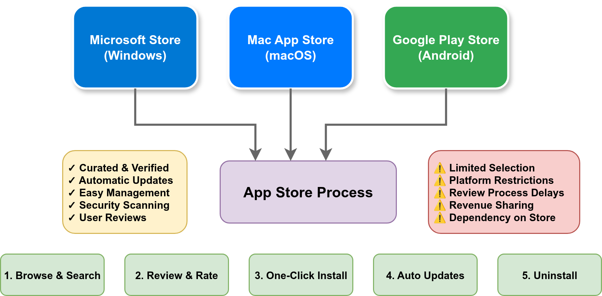
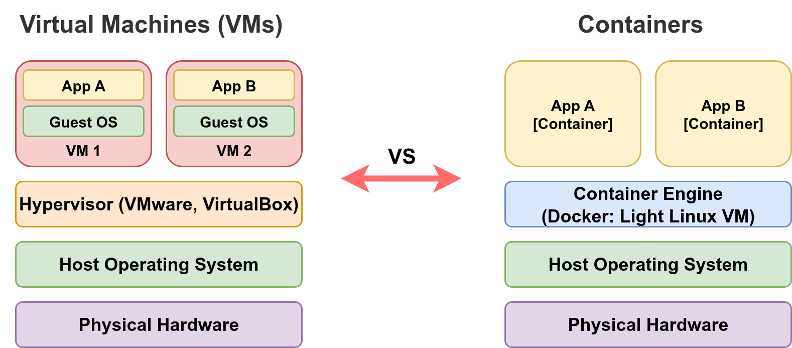

Operating System Essentials#
Introduction to computer programming
Management and Artificial Intelligence
Covering the essentials#
Understanding your operating system is crucial for effective programming and computer use:
File Systems: How files and directories are organized
Command Line Interface: Powerful text-based interaction
Process Management: How programs run and are controlled
Application Installation: How software can be deployed and managed
We’ll focus on Windows and macOS with hands-on examples!
File Systems: The Foundation#
Every operating system organizes files in a hierarchical structure, like a tree:

Key Concepts:
Root: The top-level directory (starting point)
Directories/Folders: Containers that hold files and other directories
Files: Individual documents, programs, or data
Path: The route to reach a specific file or directory
Windows File System Structure#
Windows uses drive letters (C:, D:, etc.) for the root top-level directory and backslashes (\) to separate folders along the path:
C:\ (Root of C: drive)
├── Windows\ (System files)
├── Program Files\ (Installed applications)
├── Users\ (User home directories)
│ ├── Alice\ (Alice's home directory)
│ │ ├── Desktop\ (Desktop files)
│ │ ├── Documents\ (User documents)
│ │ ├── Downloads\ (Downloaded files)
│ │ └── Pictures\ (User photos)
│ └── Bob\ (Bob's home directory)
└── temp\ (Temporary files)
Examples of Windows paths:
C:\Users\YourName\Documents\report.docxC:\Program Files\Google\Chrome\chrome.exeD:\Photos\vacation\beach.jpg
NOTE: Each disk gets a different drive letter (e.g., D:) and an independent file system. By convention, C: is assigned to the disk containing the operating system.
macOS File System Structure#
macOS uses forward slashes (/) and starts from root (/):
/ (Root directory)
├── Applications/ (Installed applications)
├── System/ (System files)
├── Users/ (User home directories)
│ ├── alice/ (Alice's home directory)
│ │ ├── Desktop/ (Desktop files)
│ │ ├── Documents/ (User documents)
│ │ ├── Downloads/ (Downloaded files)
│ │ └── Pictures/ (User photos)
│ └── bob/ (Bob's home directory)
├── Library/ (System libraries)
└── tmp/ (Temporary files)
Examples of macOS paths:
/Users/YourName/Documents/report.docx/Applications/Google Chrome.app/Users/YourName/Pictures/vacation/beach.jpg
NOTE: macOS mounts other drives within the main file system hierarchy. When you connect an external drive like a USB flash drive, it’s automatically mounted at /Volumes/DRIVE_NAME. For example, if you plug in a flash drive named “PENDRIVE”, it would be accessible at: /Volumes/PENDRIVE/.
Absolute vs Relative Paths#
Absolute Path: Complete path from the root
Windows:
C:\Users\Alice\Documents\project\main.pymacOS:
/Users/alice/Documents/project/main.py
Relative Path: Path relative to current location
macOS:
project/main.py(from current dir, openproject, reachmain.py)Windows:
project\main.py(from current dir, openproject, reachmain.py)macOS:
../Documents/report.docx(go up one level, then to Documents)Windows:
..\Documents\report.docx(go up one level, then to Documents)macOS:
./main.py(current directory)Windows:
.\main.py(current directory)
Special Directory Symbols:
.= current directory..= parent directory (one level up)~= home directory (macOS/Linux)%USERPROFILE%= home directory (Windows)
The Command Line Interface (CLI)#
The command line is a text-based way to interact with your computer:

Why use the command line?
Speed: Much faster for many tasks
Power: Can do things GUIs can’t
Automation: Easy to script repetitive tasks
Remote access: Work on computers anywhere
Programming: Essential for development work
Windows Command Line#
Opening the Command Line (alternatives):
Press
Win + R, typecmd, press Enter (Command Prompt)Press
Win + X, select “Windows PowerShell” (PowerShell)Search for “Command Prompt” or “PowerShell” in Start menu
Basic Windows Commands:
Command |
Purpose |
Example |
|---|---|---|
|
List files and directories |
|
|
Change directory |
|
|
Create directory |
|
|
Copy files |
|
|
Delete files |
|
|
Display file content |
|
|
Clear screen |
|
macOS Command Line#
Opening Terminal (alternatives):
Press
Cmd + Space, type “Terminal”, press EnterGo to Applications → Utilities → Terminal
Use Spotlight search for “Terminal”
Basic macOS/Unix Commands:
Command |
Purpose |
Example |
|---|---|---|
|
List files and directories |
|
|
Change directory |
|
|
Create directory |
|
|
Copy files |
|
|
Delete files |
|
|
Display file content |
|
|
Clear screen |
|
Understanding Processes#
A process is a running program in memory:

Key Process Concepts:
Process ID (PID): Unique identifier for each process
Parent/Child: Processes can create other processes
Memory: Each process has its own memory space
CPU Time: Processes share CPU time
States: Processes transition between different states
Running: Currently executing on the CPU
Ready: Waiting to be assigned to the CPU
Blocked/Waiting: Waiting for some event (I/O, signals, etc.)
Terminated: Execution completed, but still in memory
New: Process created but not yet admitted to the pool of executable processes
Process Management in Windows#
Task Manager (Ctrl + Shift + Esc):
Graphical interface to view and manage running processes
Monitor CPU, memory, disk, and network usage
Terminate unresponsive applications
Command Line Process Management:
# List all running processes
tasklist
# Find specific processes by name
tasklist | findstr "notepad"
# Kill a process by name (force with /F)
taskkill /IM notepad.exe
taskkill /F /IM notepad.exe
# Kill a process by PID (force with /F)
taskkill /PID 1234
taskkill /F /PID 1234
# Start a program
start notepad.exe
Process Management in macOS#
Activity Monitor (Applications → Utilities):
GUI tool for monitoring and managing processes
Shows CPU, memory, energy, disk, and network usage
Command Line Process Management:
# List running processes
ps aux
# Find specific process
ps aux | grep "TextEdit"
# Kill a process by PID
kill 1234
# Force kill a process (SIGKILL)
kill -9 1234
# Kill process by name
killall TextEdit
# Start a program
open -a TextEdit
# View process hierarchy
pstree
Environment Variables#
Environment variables store system configuration:
Windows:
# View all environment variables
set # gci env: in PowerShell
# View specific variable
echo %PATH%
echo %USERPROFILE%
# Set a variable (temporary)
set MYVAR=Hello
echo %MYVAR%
macOS:
# View all environment variables
env
# View specific variable
echo $PATH
echo $HOME
# Set a variable (temporary)
export MYVAR="Hello"
echo $MYVAR
Important Environment Variables#
PATH: Directories where executable files are found (separated by:in macOS,;in Windows)HOME/USERPROFILE: User’s home directory locationPWD: Current working directoryTMPDIR/TEMP: Directory for temporary filesUSER/USERNAME: Current usernameSHELL: Default shell programLANG/LANGUAGE: System language and locale settings
NOTE: The PATH environment variable is crucial for program accessibility. When software is installed, it must add its directory to PATH; otherwise you can only run the program by typing its absolute path. This is why properly installed programs can be launched from any location in the terminal by simply typing their name.
File Permissions#
Windows Permissions:
Read: View file contents
Write: Modify file contents
Execute: Run the file as a program
Full Control: All permissions plus ability to change permissions
macOS Permissions (Unix-style):
# View permissions
ls -l myfile.txt
# Output: -rw-r--r-- 1 user group 1024 Jan 1 12:00 myfile.txt
# ^^^ ^^^ ^^^
# | | |
# | | +-- Others (everyone else)
# | +------ Group
# +---------- Owner (you)
Permission Symbols:
r= read,w= write,x= execute
System Information Commands#
Windows:
# System information
systeminfo
# Current user
whoami
# Current date and time
date
time
macOS:
# System information
uname -a
# Current user
whoami
# Current date and time
date
# Disk usage
df -h
Shortcuts and Productivity Tips#
Windows Keyboard Shortcuts:
Win + E: Open File ExplorerWin + R: Run dialogWin + L: Lock computerAlt + Tab: Switch between applicationsCtrl + Shift + Esc: Task Manager
macOS Keyboard Shortcuts:
Cmd + Space: Spotlight searchCmd + Tab: Switch between applicationsCmd + Option + Esc: Force quit applicationsCmd + Shift + 3: Screenshot
Command Line Shortcuts (both systems):
Tab: Auto-complete file/directory names↑/↓ arrows: Navigate command historyCtrl + C: Cancel current commandCtrl + L: Clear screen
Application Installation Methods#
Modern software can be installed and deployed in several ways:
Direct Downloads: Executable files (.exe, .msi, .dmg)
Application Stores: Curated marketplaces
Containers & Virtual Machines: Isolated environments
Each method has different goals, advantages, and trade-offs depending on:
Security requirements
Deployment complexity
Resource constraints
Maintenance needs
Direct Downloads: Executable Files#

Common File Types:
Windows:
.exe(executable),.msi(Windows Installer)macOS:
.dmg(disk image),.pkg(package installer)
Process:
Download from official website or repository
Verify file integrity (checksums, digital signatures)
Run installer with appropriate permissions
Follow installation wizard steps
Direct Downloads: Pros & Cons#
Advantages:
Immediate access to latest software releases
Freedom from platform-specific restrictions
Offline installation capabilities
Complete control over installation parameters
Enterprise deployment compatibility
Disadvantages:
Security vulnerabilities from unverified sources
Manual maintenance of updates required
Complex dependency resolution
Decentralized removal procedures
Potential version incompatibilities
Most suitable for enterprise-grade software, development toolchains, specialized applications
Application Stores#

Unified experience for all steps!
App Stores: Pros & Cons#
Advantages:
Curated & verified applications
Automatic updates and security patches
Easy management (install/uninstall)
User reviews and ratings
Sandboxed security model
Centralized billing and licensing
Disadvantages:
Limited selection of applications
Platform restrictions and policies
Review process delays for updates
Revenue sharing with platform
Dependency on store availability
Best for consumer applications, mobile apps, casual software
Why VMs or Containers when we already have apps?#
Isolation: Applications run in their own environment without interfering with the host system
Compatibility: Some applications may not be compatible with the user’s operating system
Dependency management: Applications may have complex dependencies that conflict with other installed software
Portability: VMs or containers provide a self-contained “package” that can be executed consistently across different environments
Reproducibility: Ensures consistent behavior regardless of where the application runs
Security: Containment of potential security vulnerabilities within the VM/container boundary
Resource allocation: Better control over CPU, memory, and storage allocation
Scalability: Easier to scale applications horizontally by deploying multiple instances
Containers are primarily used for deploying non-graphical applications (although Flatpak and Snap on Linux are an exception). They have become the industry standard for deploying services in cloud environments, especially web services, due to their lightweight nature and efficient resource utilization.
Containers vs Virtual Machines#

Key Differences:
Aspect |
Virtual Machines |
Containers |
|---|---|---|
Isolation |
Complete OS isolation |
Process-level isolation |
Resource Usage |
Heavy (full OS) |
Lightweight (shared kernel) |
Startup Time |
Minutes |
Seconds |
Portability |
Hypervisor dependent |
Open format (OCI) |
NOTE: For users, containers typically means using Docker. Docker runs Linux-based applications, so on macOS and Windows, it requires a lightweight Linux-based VM. On Linux, Docker can run natively without an additional VM layer.
No Solution to Rule Them All#
Decision Matrix:
Use Case |
Recommended Method |
Why? |
|---|---|---|
Consumer Apps |
App Store |
Security, ease of use |
Enterprise Software |
Direct Download |
Control, customization |
Web Applications |
Containers |
Scalability, portability |
Legacy Systems |
Virtual Machines |
Isolation, compatibility |
Development Tools |
Direct Download + Containers |
Flexibility + consistency |
Microservices |
Containers |
Orchestration, scaling |
Security Testing |
Virtual Machines |
Complete isolation |